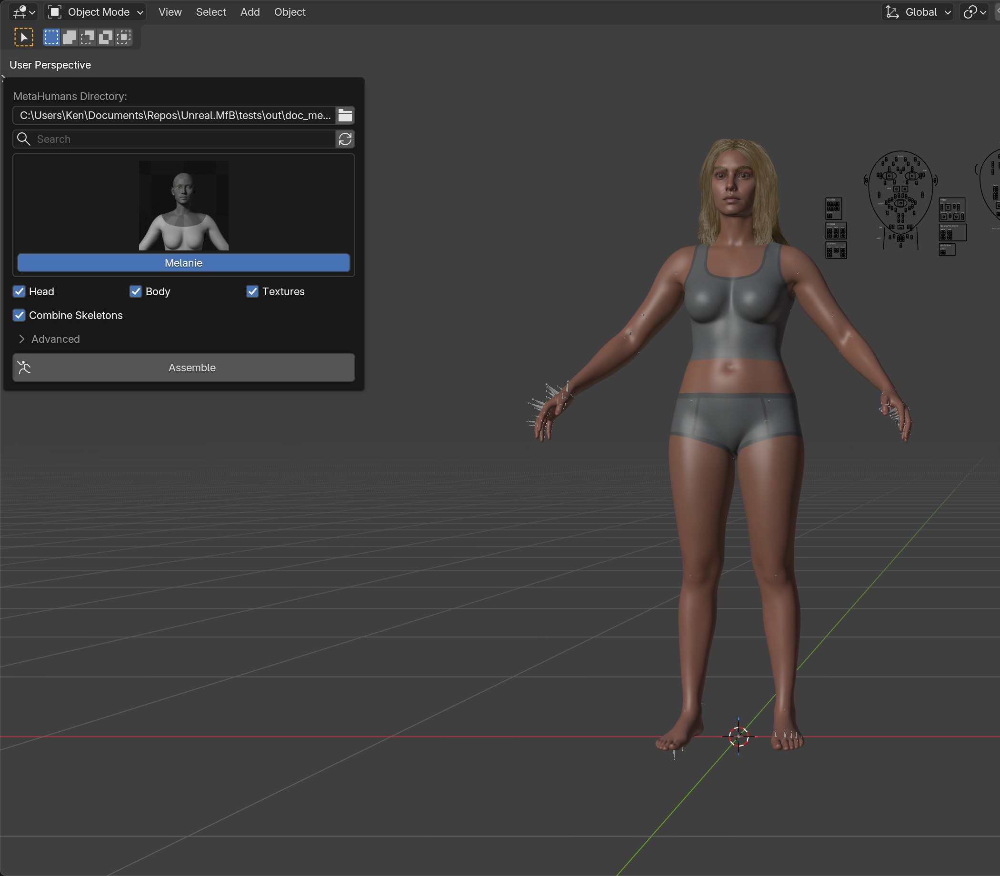

Character Assembler
Bring any MetaHuman into Blender
Pick a character from a gallery of your MetaHumans and click Assemble. In moments you have the complete character: head and body, skin and eye textures, every level of detail, and a rig that's ready to animate.
Learn about the Character Assembler →